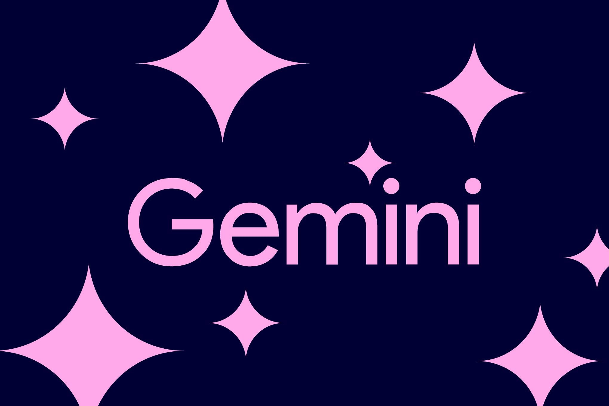

Google объявила о полном развертывании Gemini 4 Argon — своей флагманской модели, которую показали ещё 30 сентября, но держали «под замком». С 13 октября она доступна разработчикам и компаниям через API в AI Studio и платформе Gemini в Google Cloud; подписчикам платных тарифов Google AI Pro и Ultra — в приложении Gemini и AI Mode в поиске, а подписчикам Ultra — ещё и в агентской платформе Antigravity. Когда (и будет ли) модель открыта бесплатным пользователям и тарифу Plus — не сообщается.
Google позиционирует Argon как модель для «глубокой работы»: программирование, финансы, юриспруденция, кибербезопасность, наука. Компания заявляет первое место в Vals Index — бенчмарке, который измеряет качество моделей на задачах из реальных экономических секторов, — а также превосходство над GPT-6 Astra, Claude Fable 5.1 и Claude Opus 5.5 по набору тестов. Стартовые цены выглядят примирительно: $2 за миллион входных токенов и $10 за выходных, причём кэшированный вход дешевле на 95%.
Цифры из собственного отчёта: в Antigravity число агентских коммитов кода выросло более чем на 35%, а количество откатов сократилось почти на треть. В Chrome Argon помог разобрать архивный legacy-код объёмом около 6 млн строк внутри 40-миллионной кодовой базы Chromium — многомесячную рефакторину команда уложила в недели. Раздел комментариев YouTube стал требовать вдвое меньше вычислительных мощностей, а в Wing (дроновая доставка Alphabet) модель отладила физический симулятор дронов. Отдельный упор — поиск и закрытие критических уязвимостей: Argon используют как инструмент киберобороны.
The Verge отмечает: последние месяцы Google фактически наблюдала за фронтирной гонкой со стороны, и запуск Argon — прямой ответ свежим релизам OpenAI и Anthropic. Редакция обращает внимание и на обещание меньше «воды»: модель, по заявлению компании, реже оговаривается, повторяется и сыпет штампами, от которых страдает большинство чат-ботов.